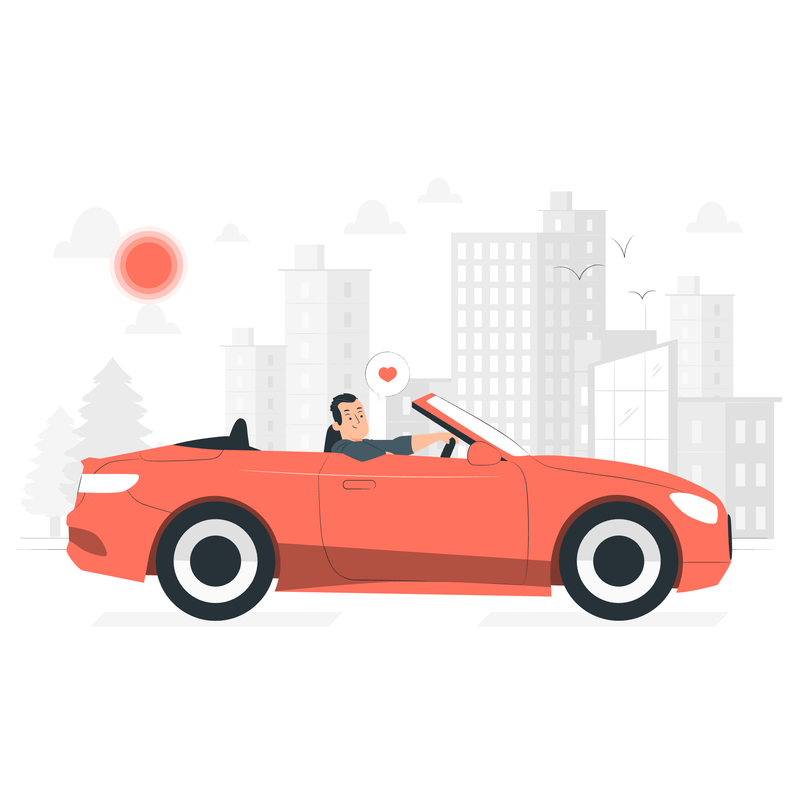

2024-08-07
"행복편지"
- 작자 박시호.

폴은 지난 해 크리스마스 무렵 형에게서 자동차 한 대를 선물로 받았습니다.
크리스마스이브에 선물 받은 새 차를 타고 즐겁게 출근을 했습니다.
그가 일을 마치고 사무실 밖으로 나와 보니 한 소년이 폴의 새 차 주위를 맴돌고 있었습니다.
폴이 다가가자 소년은 부러운 눈으로 차를 바라보면 물었답니다.
"아저씨가 이 차 주인이세요?"
폴이 고개를 끄덕였습니다.
"그렇단다. 아저씨의 형이 크리스마스 선물로 사주었지."
그러자 소년은 깜짝 놀랐습니다.
"아저씨의 형이 이 차를 사줬고, 아저씨는 한 푼도 내지 않고 이 멋진 차를 얻었단 말이에요?
우와, 나도 그럴 수 있다면 얼마나 좋을가,,,"
소년은 말을 끝맺지 못했습니다. 당연히 폴은 소년이 멋진 차를 갖고 싶어 그런는 것이라고 생각했습니다.
그러나 소년의 그 다음 말이 폴을 놀라게 했습니다.
"나도 그런 형이 될 수 있다면 얼마나 좋을까."
폴은 의외의 말을 하는 소년을 바라보았습니다. 그러고는 무심결에 소년에게 말했습니다.
"이 차 타 보고 싶으면 아저씨가 한 번 태워줄까?"
소년은 기뻐서 소리쳤습니다.
"정말로요? 네! 진짜 좋아요!"
폴은 소년을 차에 태우고 주위를 한 바퀴 돌았습니다. 그런데 소년이 문득 폴을 보면서 눈을 빛내며 말했습니다.
"아저씨, 죄송하지만 저희 집 앞까지 태워다주실 수 있나요?"
폴은 자신도 모르게 미소를 지었습니다.
소년이 무엇을 원하는지 알 수 있었습니다.
멋진 차를 타고 집에 도착한 자신의 모습을 이웃 사람들에게 자랑하고 싶은 것이겠지요.
그러나 폴의 예상은 또다시 빗나가고 말았습니다.
집 앞에 도착한 소년은 폴에게 부탁했습니다.
"저기 계단 앞에 세워주세요. 그리고 잠시만 기다려주세요."
소년은 쏜살같이 계단을 뛰어 올라갔습니다.
잠시 후 소년은 두 다리가 불구인 어린 동생을 안호 낑낑대며 현관을 내려왔습니다.
소년은 동생을 현관 계단에 앉혀 어깨동무를 하고는 손가락으로 폴의 자동차를 가리키며 말했습니다.
"내가 어제 말한 게 저 차야, 버디. 저 아저씨의 형이 크리스마스 선물로 사준 거래.
그래서 저 아저씨는 한 푼도 낼 필요가 없었대. 나도 언젠가 너에게 저런 차를 선물할거야.
넌 한푼도 내지 않아도 돼. 그리고 넌 그 차를 타고 세상의 멋진 것들을 모두 구경할 수 있게 될 거야"
폴은 차에서 내려 현관으로 다가가 소년의 동생을 번쩍 안아 앞좌석에 앉혔습니다.
소년도 눈을 반짝이며 차에 올라탔습니다.
그들은 오래도록 기억에 남을 크리스마스 드라이브를 떠났습니다.